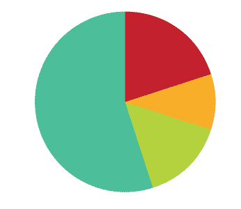

Concept - To raise awareness of the deaf community and of the difficulties they live with and increase donations to the deaf-people's association we worked with.
Method – We drew people's attention by placing an abandoned baby stroller in the middle of a street, with the sound of a baby loudly crying coming from inside the stroller. Only after approaching it could people see the video of a crying baby and an explanation about life of a deaf baby. When people found out that it was a "scam," they immediately searched for a con artist. We were near the stroller waiting patiently for people's reactions, documenting them, and learning from them. We had a stand where people could donate money, or just blame us for giving them a heart attack. Sometimes we received praise and sometimes not, but we did collect some money for the deaf-people's association.
We were ready for stage two. We mimicked the sign-language translation bubble on the television – where a translator signs whatever is being said. We got back on the street, interfering with people's conversations, translating them, and waiting to how it takes them to notice that we are around. After each interaction, we gave people brochures with relevant information about the project. We also created a website for the project so that people could see themselves in action and get further information about the initiative. We gave people who donated fun giveaways as a show of gratitude.
Baby Bubble members: Moran Shedzunski, Einat Dotan, Boaz Sides, and me.
Project finished on February, 2010

{kind=link}